Amazon WorkSpaces 構築・OU・GPO
AD ConnectorをWorkSpacesへ登録し、パイロットWorkSpaceを作成する
ターゲットOU、権限委任、WSP管理テンプレート、GPOの作成・適用確認まで整理する
AWS Managed Microsoft AD・WorkSpaces OU／GPO構成概要
目次
概要
AWS Managed Microsoft ADを作成した直後のOU／GPOと、本作業で追加したAmazon WorkSpaces用OU／GPOを整理します。AWSが管理する領域は変更せず、お客様管理OUであるad配下にWorkSpaces OUを作成し、AD Connectorの権限委任、ターゲットOUおよびDCV用GPOの適用先を同じOUへ揃える
本手順書で確認すること
- AWS Managed Microsoft ADが自動作成する管理領域とGPO
- お客様が管理できる
ad、ComputersおよびUsersOUの役割 - 今回追加した
WorkSpacesOU、委任先グループおよびGPOの関係 - 新規WorkSpaceへ反映されるOU／GPOと、既存WorkSpaceへの影響
完了条件
- ✔ AWS管理領域とお客様管理領域を区別できる
- ✔ WorkSpacesのコンピューター格納先が
ad\Computers\WorkSpacesである - ✔ ターゲットOUと
Connectorsグループへの委任先が同じOUである - ✔
Amazon WorkSpaces DCV PolicyがWorkSpaces OUへ直接リンクされている
今回の設定値
| 項目 | 今回の設定値 |
|---|---|
| ディレクトリDNS名 | ad.example.com |
| お客様管理OU | ad |
| WorkSpacesコンピューター格納先 | ad\Computers\WorkSpaces |
| ターゲットOU | OU=WorkSpaces,OU=Computers,OU=ad,DC=ad,DC=example,DC=com |
| 委任先グループ | Connectors |
| 継続利用するGPO | Amazon WorkSpaces DCV Policy |
| GPOの直接リンク先 | ad\Computers\WorkSpaces |
| リンク設定 | 有効、強制なし、WMIフィルターなし |
| DCV設定 | Configure clipboard redirection＝有効／Copy and Paste |
GPMCで確認するManaged AD初期構成とWorkSpaces追加項目
AWS Managed Microsoft ADを作成すると、ドメインルートにAWS Delegated Groups、AWS ReservedおよびNetBIOS名と同名のOU（本環境ではad）が作成されます。ad配下には、お客様が管理するComputers OUとUsers OUが作成され、初期Adminユーザーはad\Usersに配置される
ドメイン直下には、Builtin、組み込みのComputersコンテナー、Domain ControllersなどWindows Active Directory標準のコンテナーも表示されます。ドメイン直下のComputersコンテナーと、お客様管理領域のad\Computers OUは別の場所
同時に、Default Domain Policy、ServerAdmins、AWS Reserved Policy:User、AWS Managed Active Directory Policyおよび時刻同期用GPOなどが作成・リンクされます。AWSが作成・管理するOUやGPOは、お客様が変更、削除またはリンク解除する対象にしない
出典：AWS公式：AWS Managed Microsoft ADで作成される内容
次の図では、GPMCの実画面を基に、①ルートドメイン、②お客様管理OUのad、③ad配下のComputersとUsers、④AWSが作成するGPOの役割と管理範囲を示します。画面内のWorkSpaces OUとAmazon WorkSpaces DCV Policyは今回追加した項目であり、ディレクトリ作成直後の既定項目ではありません。したがって、この図は「初期構成だけ」を表すものではなく、初期項目と今回の追加項目を同じ管理ツリー上で区別するための図
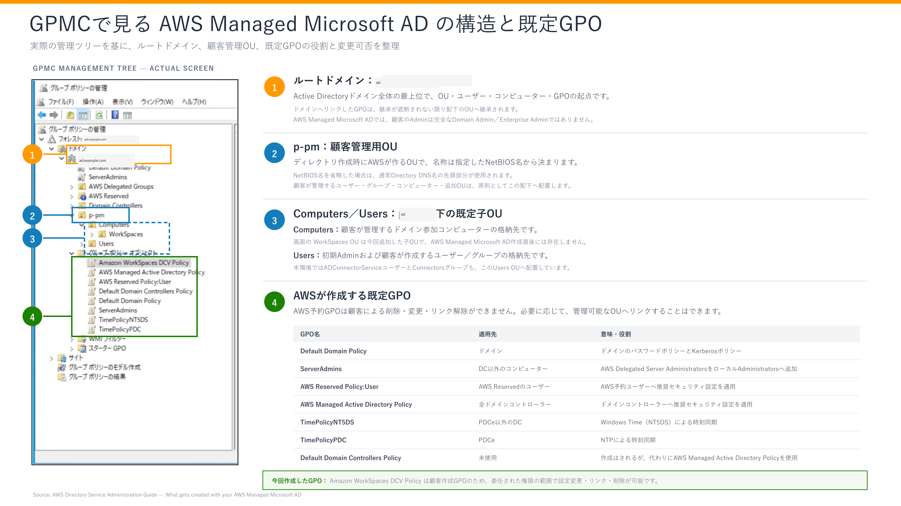
今回追加したWorkSpaces用構成
ad\Computers配下へWorkSpaces OUを作成し、AD Connectorが使用するConnectorsグループへ、同OU内のコンピューターオブジェクトを作成、削除、読み取りおよび書き込みする権限を委任します。サービスアカウントとグループはad\Usersに配置したまま、権限だけをWorkSpaces OUへ委任する
Amazon WorkSpacesのターゲットOUを同じOUへ設定し、Amazon WorkSpaces DCV Policyを直接リンクします。既定GPOの継承は維持され、その上にWorkSpaces固有設定が適用される。Windows WorkSpacesで使用できる管理テンプレートと設定項目は出典：AWS公式：WorkSpaces PersonalでWindows WorkSpacesを管理する
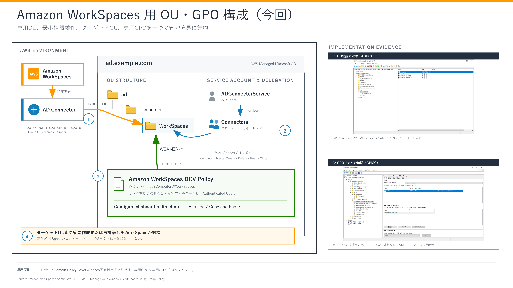
ターゲットOUを変更しても、作成済みWorkSpaceのコンピューターオブジェクトは自動移動されません。変更後に新規作成または再構築したWorkSpaceへ反映される
詳細手順
- Amazon WorkSpaces用OU作成・権限委任・ターゲットOU設定手順
- Amazon WorkSpaces用GPO作成・適用・運用手順
- AWS Managed Microsoft ADの2台ドメインコントローラー構成・役割
Amazon WorkSpaces作成・バンドル設定手順
目次
概要
本手順書で実施すること
VPC003～VPC006に作成したAD ConnectorをWorkSpaces Personalへ登録し、各VPCのWorkSpaces用プライベートサブネットを2つ指定します。その後、PowerPro with Windows 10 (Server 2022 based)、DCV（旧WSP）、ルート80GB、ユーザー50GBのWindows WorkSpaceをユーザー単位で作成し、AVAILABLE、Active Directory上のOU所属およびクライアント接続を確認する
本書の操作を対象AD Connectorごとに繰り返します。カスタムイメージとカスタムバンドルを使用する場合は、Amazon WorkSpacesカスタムイメージ・バンドル作成・共有手順を先に完了する
完了条件
- ✔ 対象AD ConnectorがWorkSpaces Personalへ登録されている
- ✔ 対象VPCの異なるアベイラビリティーゾーンにある2サブネットを選択している
- ✔ Directory ID、ユーザー、バンドル、DCV、実行モード、80GB／50GBおよび暗号化設定が承認済み値と一致している
- ✔ WorkSpaceが
AVAILABLEとなり、対象OUへコンピューターオブジェクトが作成されている - ✔ WorkSpacesクライアントからドメインユーザーで接続できる
今回の設定値
| 項目 | 今回の設定値 |
|---|---|
| WorkSpacesタイプ | Personal |
| ディレクトリDNS名 | ad.example.com |
| ユーザー | sampleadmin |
| コンピューティングタイプ | PowerPro |
| OSベース | Windows Server 2022 |
| クライアントプロトコル | DCV（旧WSP） |
| バンドル | PowerPro with Windows 10 (Server 2022 based) |
| バンドルID | wsb-391xpys5j |
| ルートボリューム | 80GB |
| ユーザーボリューム | 50GB |
| 実行モード | AutoStop |
| 自動停止時間 | 1時間 |
| ボリューム暗号化 | ルート・ユーザーとも未選択 |
| WorkSpaces格納先OU | ad\Computers\WorkSpaces |
バンドル名とIDは提供時期やリージョンによって変わる可能性があるため、名前の一部や過去のIDだけで選択せず、OS、プロトコル、コンピューティングタイプおよびストレージを含めて確認する
VPC別WorkSpaces用サブネット
| 対象VPC | サブネット1 | サブネット2 |
|---|---|---|
| VPC003 | 192.168.227.0/25（003-003a） |
192.168.227.128/25（003-003c） |
| VPC004 | 192.168.229.0/25（004-003a） |
192.168.229.128/25（004-003c） |
| VPC005 | 192.168.231.0/25（005-003a） |
192.168.231.128/25（005-003c） |
| VPC006 | 192.168.233.0/25（006-003a） |
192.168.233.128/25（006-003c） |
AD Connector用の002a／002cサブネットと、WorkSpaces用の003a／003cサブネットを取り違えない
WorkSpacesとバンドル
- パブリックバンドル：AWSが提供するOS、コンピューティング、ストレージおよびプロトコルの組み合わせ
- カスタムイメージ：参照WorkSpaceのOS、アプリケーションおよび設定を取り込んだイメージ
- カスタムバンドル：カスタムイメージへコンピューティングタイプとストレージ設定を組み合わせた起動テンプレート
今回の画面では、PowerPro with Windows 10 (Server 2022 based)を選択しています。表示名に「Windows 10」が含まれますが、括弧内のServer 2022 basedを含む正式名称で記録する
前提条件
- ✔ 対象リージョンがアジアパシフィック（東京）である
- ✔ VPCピアリング、両方向のルート、ネットワークACLおよびDC用SGの許可が設定済みである
- ✔ 対象VPCのAD Connectorが「アクティブ」で、ユーザー検索が成功する
- ✔ AD Connectorの2つのサブネットから、両方のDNSサーバー／ドメインコントローラーへ到達できる
- ✔
ADConnectorServiceが有効・未ロックで、AD Connectorへ登録したパスワードと一致する - ✔
ConnectorsへWorkSpaces OU内のコンピューター作成・削除・読み取り・書き込みを委任している - ✔ WorkSpacesのターゲットOUが
ad\Computers\WorkSpacesである - ✔ 利用ユーザーがActive Directoryにあり、同じディレクトリでPersonal WorkSpaceを重複作成しない
- ✔ Service Quotasと各サブネットの空きIPアドレスに余裕がある
- ✔ 実行モード、暗号化、KMSキー、タグ、セルフサービス権限およびインターネット接続方式が承認済みである
注意：Directory IDは現行コンソールで照合する
Directory IDは、ドメイン名、VPC、ディレクトリタイプおよび状態と合わせて現行AWSコンソールで確認する。別VPCのAD Connectorや過去資料のIDを流用しない
AD Connectorの登録
AWS Directory ServiceでAD Connectorを作成しただけではWorkSpacesで使用できません。対象AD ConnectorをWorkSpaces Personalへ登録し、WorkSpacesを起動する2サブネットを指定する
登録前の確認
- Amazon WorkSpacesコンソールを開き、「ディレクトリ」を選択
- WorkSpacesタイプが「個人」であることを確認
- 対象AD Connectorが登録済み一覧にないことを確認
- 「ディレクトリの作成」を選択
図1では、①登録済みディレクトリの一覧、②「ディレクトリの作成」を確認する

ディレクトリを登録する
- WorkSpacesタイプで「個人」を選択
- WorkSpaceデバイス管理で「AWS Directory Service」を選択
- Directory ID、タイプ、ドメイン、VPCおよび状態を照合して対象AD Connectorを選択
- 対象VPCのWorkSpaces用サブネットを異なるアベイラビリティーゾーンから2つ選択
- セルフサービスアクセス許可を承認済み設計に合わせます。有効にすると、利用者が再構築、コンピューティングタイプ、ボリュームおよび実行モードなどを変更でき、料金へ影響する場合がある
- 「登録」を選択し、
REGISTERINGから登録済みへ変わるまで待機 - 登録後のDirectory ID、AD Connector、VPC、ドメインおよび2サブネットを確認
図2では、赤枠の状態が「登録済み」であることを確認する
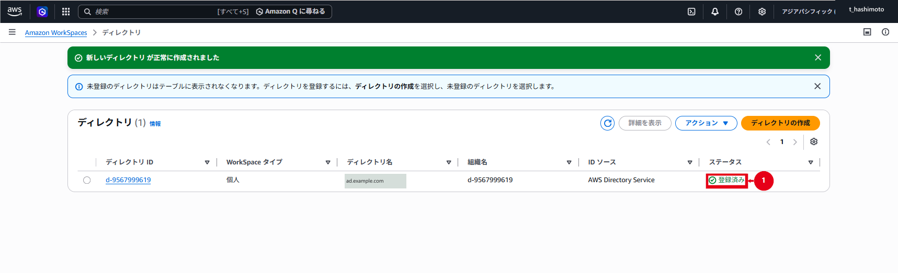
AWSが作成した<Directory ID>_workspacesMembers形式のセキュリティグループを確認し、既存ルールを根拠なく削除または置換しない
ターゲットOUの確認
- WorkSpacesコンソールの「ディレクトリ」で対象AD Connectorを選択
- 「ターゲットドメインと組織単位」を開く
- Amazon WorkSpaces用OU作成・権限委任・ターゲットOU設定手順で設定したDNと一致することを確認
Connectorsへの委任先OUとも一致することを確認
WorkSpaces専用OUやお客様作成GPOは、WorkSpace作成時に自動作成されません。GPOはGPMCで対象OUへリンクする
WorkSpaceの作成
出典：AWS公式：WorkSpaces PersonalのWorkSpaceを作成する
作成を開始する
- WorkSpacesコンソールで「WorkSpaces」を選択
- 「WorkSpacesを起動」から「個人」を選択
- 「WorkSpacesの作成」を選択
図3では、①「個人」、②「WorkSpacesの作成」を選択する

バンドル、ディレクトリおよびユーザーを指定する
- 「手動で設定」を選択
- 「WorkSpacesバンドルを使用」を選択
- 正式名称、Bundle ID、OS、プロトコルおよびコンピューティングタイプを確認して、承認済みバンドルを選択
- 実行モードを選択し、AutoStopの場合は停止までの時間を指定
- Directory ID、ドメインおよびVPCを照合して登録済みAD Connectorを選択
- 申請されたドメインユーザーを選択
- ルート80GB、ユーザー50GBを指定
- ルート／ユーザーボリュームの暗号化とKMSキーを承認済み設計に合わせる
- 必須タグ、ローカル管理者権限、追加SG、インターネット接続およびデバイスアクセス制御を確認
図4では、①手動設定、②WorkSpacesバンドル、③バンドル、④実行モード、⑤停止時間、⑥ディレクトリ、⑦ユーザー、⑧80GB／50GB、⑨暗号化設定を確認する
選択したバンドルの詳細で、バンドルID、言語、OS、プロトコルおよびハードウェアを確認する
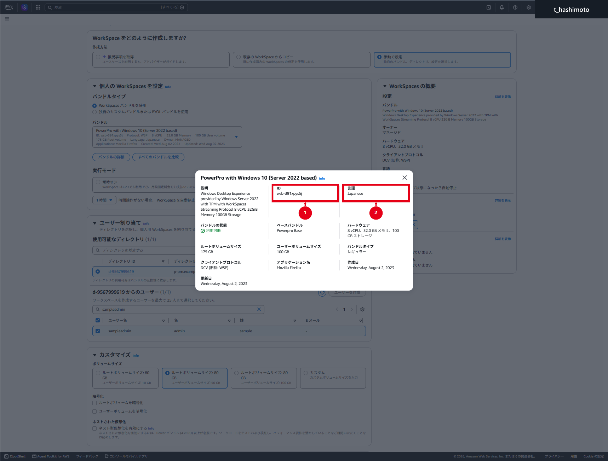
図5のパブリックバンドル詳細にはルート175GB／ユーザー100GBが表示されます。今回のWorkSpace作成ではカスタマイズ欄で80GB／50GBを選択します。バンドル詳細の既定表示と、作成時に確定したストレージを混同しない
注意：ストレージと暗号化は作成前に確定する
WorkSpace作成後、ボリュームは拡張できますが縮小できません。暗号化なしで作成したWorkSpaceへ後から暗号化を追加すること、暗号化済みWorkSpaceから暗号化を解除することもできません。誤った場合は利用者影響とデータ退避を確認して再作成する
作成を実行する
- バンドル、Directory ID、ユーザー、実行モード、ストレージ、暗号化、KMSキーおよびタグを最終確認
- 「WorkSpacesの作成」を選択
- 一覧で状態が「構築中」または
PENDINGになったことを確認
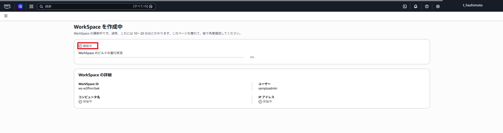
- 状態が「使用可能」または
AVAILABLEになるまで待機 - WorkSpace ID、ユーザー、コンピューター名、バンドル、80GB／50GB、実行モード、DCV、IPアドレスおよび暗号化状態を確認
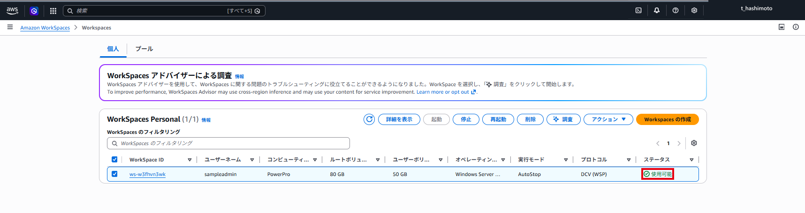
作成後の確認
Active Directory
- ADUCで
ad\Computers\WorkSpacesを開き、新しいコンピューターオブジェクトを確認 - コンピューター名がWorkSpacesコンソールの値と一致することを確認
gpresult /scope computer /rを実行し、Amazon WorkSpaces DCV Policyが適用されていることを確認
クライアント接続
- WorkSpacesクライアントをインストール
- 対象ディレクトリの登録コードを入力
- Active Directoryのユーザー名とパスワードでサインイン
- デスクトップ、業務ネットワーク、DNS、時刻同期および必要アプリケーションを確認
- AutoStopを使用する場合は、切断、停止および再接続を確認
よくある問い合わせと切り分け
次の5件は、AD ConnectorでWorkSpacesを使用する際に問い合わせが多い内容
出典：AWS公式：WorkSpaces Personalに関する問題のトラブルシューティング
招待メールまたはパスワードリセットメールが届かない
AD Connector、信頼されたドメイン、またはActive Directoryに既に存在するユーザーを使用する場合、ウェルカムメールやパスワードリセットメールは自動送信されません。管理者が登録コード、クライアントの入手先および接続方法を安全な経路で案内し、パスワードリセットはActive Directory管理者が実施する
「パスワードを忘れた場合」が表示されない
AD Connectorまたは信頼されたドメインのユーザーは、WorkSpacesクライアントからパスワードをセルフリセットできません。Active Directory側で本人確認とパスワードリセットを行い、「次回ログオン時にパスワード変更が必要」を有効にした場合のWorkSpaces接続可否も運用手順に従って確認する
DNS unavailable
AD Connectorから指定DNSサーバーのTCP 53とUDP 53へ通信できない場合に発生します。AD Connectorの両サブネットから両DNS IPへのルート、セキュリティグループ、ネットワークACLおよびDNSサーバー側ファイアウォールを確認する
Connectivity issues detected
LDAP unavailable (TCP port 389)またはKerberos/authentication unavailable (TCP port 88)が表示された場合は、AD ConnectorからドメインコントローラーへのTCP／UDP 88（Kerberos）とTCP／UDP 389（LDAP）を確認する。片方のドメインコントローラーだけでなく、両方へ到達できることを確認する
SRV record
AD Connectorは、指定DNSサーバーから_ldap._tcp.<DNSドメイン名>と_kerberos._tcp.<DNSドメイン名>のSRVレコードを取得する必要があります。次のコマンドで両レコードを確認し、対象ドメインコントローラーが返ることを確認する
Resolve-DnsName -Type SRV '_ldap._tcp.ad.example.com'
Resolve-DnsName -Type SRV '_kerberos._tcp.ad.example.com'最後の3件はAD Connectorの作成・接続診断でも発生します。WorkSpace作成を繰り返す前に、AD Connector側のネットワークとDNSを解消する
作成に失敗した場合
- AD ConnectorとWorkSpacesへのディレクトリ登録が正常か確認
- 両サブネットから両DNSサーバー／ドメインコントローラーへ到達できることを確認
- サブネットの空きIP、2つのAZ、往復ルート、SGおよびネットワークACLを確認
ADConnectorServiceの有効化、ロック、パスワード期限およびAD Connectorに保存した認証情報を確認ConnectorsのOU委任とWorkSpacesのターゲットOUが一致することを確認- 対象ユーザー、重複WorkSpace、Service QuotasおよびKMSキー権限を確認
- WorkSpacesのエラーメッセージ、CloudTrailおよびAWS Health Dashboardを確認
AWS公式は、接続したディレクトリでWorkSpaceの起動が繰り返し失敗する場合、AD Connector指定時の両DNSサーバー／ドメインコントローラーへ各ディレクトリサブネットから到達できることを確認するよう案内しています。必要に応じて各サブネットへ検証用EC2を起動し、両DNS IPを使ったドメイン参加で切り分ける
誤作成時の対応
- 対象WorkSpaceのID、ユーザー、Directory IDおよび誤設定内容を照合
- 利用者へ登録コードを案内せず、必要なデータがないことを確認
- 対象WorkSpaceだけを終了
- Active Directory側のコンピューターオブジェクトを確認
- 正しい値でWorkSpaceを再作成
ディレクトリ登録を解除する場合は、そのディレクトリを使用するWorkSpacesと関連サービスをすべて確認する。稼働中のWorkSpacesがある状態で、ディレクトリ登録、AD Connector、サービスアカウント、OU委任または必須SGルールを先に削除しない
Amazon WorkSpaces用OU作成・権限委任・ターゲットOU設定手順
目次
概要
本手順書で実施すること
AWS Managed Microsoft ADのお客様管理OUad\Computers配下にWorkSpaces OUを作成します。AD Connectorの委任用グループConnectorsへ、このOU内のコンピューターオブジェクトを作成、削除、読み取りおよび書き込みする権限を付与し、WorkSpaces PersonalのターゲットOUへ同じOUを設定する
設定後に新しいWorkSpaceを作成し、コンピューターオブジェクトがad\Computers\WorkSpacesへ自動配置されたことを確認する
完了条件
- ✔
ad\Computers\WorkSpacesOUが作成され、誤削除防止が有効である - ✔
Connectorsへコンピューターオブジェクトの作成、削除、読み取りおよび書き込みだけを委任している - ✔ 詳細ACLで委任先、対象オブジェクトおよび適用先を確認している
- ✔ WorkSpacesのターゲットOUが委任先OUと一致している
- ✔ 設定後に新規作成したWorkSpaceが対象OUへ自動配置されている
今回の設定値
| 項目 | 今回の設定値 |
|---|---|
| ディレクトリDNS名 | ad.example.com |
| お客様管理OU | ad |
| 親OU | ad\Computers |
| WorkSpaces OU | ad\Computers\WorkSpaces |
| ターゲットOUのDN | OU=WorkSpaces,OU=Computers,OU=ad,DC=ad,DC=example,DC=com |
| 委任先グループ | Connectors |
| 委任対象 | コンピューターオブジェクト |
| 委任権限 | 作成、削除、読み取り、書き込み |
OU構成
ad.example.com
└─ ad
├─ Computers
│ └─ WorkSpaces
└─ Users
├─ ADConnectorService
├─ Connectors
└─ WorkSpaces利用ユーザーADConnectorServiceとConnectorsの配置先はad\Usersです。権限を委任する場所は、WorkSpacesのコンピューターオブジェクトを作成するad\Computers\WorkSpacesです。アカウントの配置先と権限の委任先を混同しない
ドメイン直下の組み込みComputersコンテナーと、お客様管理領域のad\Computers OUは別の場所です。ADUCで完全なパスを確認してから操作する
注意：同じ権限委任を二重に登録しない
AD Connector用サービスアカウント作成・権限委任・運用手順でad\Computers\WorkSpacesへの委任を完了済みの場合は、詳細ACLを確認して本書の委任操作を省略します。同じConnectors、対象オブジェクト、権限および適用先のACEを重複して追加しない
前提条件
- ✔ AWS Managed Microsoft ADとAD Connectorが「アクティブ」である
- ✔ AD ConnectorがWorkSpaces Personalへ登録済みである
- ✔ 対象ドメインに参加した管理用WorkSpaceまたは管理用EC2を使用している
- ✔ ADUCとActive Directory PowerShellモジュールを使用できる
- ✔ OU作成と権限委任ができるドメイン管理資格情報を使用している
- ✔ Directory ID、AD Connector、VPCおよび変更対象OUを作業申請と照合している
Windows Server 2022ベースの管理端末へADUCとGPMCを導入する場合は、管理者PowerShellで次を実行する
Install-WindowsFeature RSAT-ADDS,GPMC
Get-WindowsFeature RSAT-ADDS,GPMC |
Select-Object DisplayName, InstallStateInstallStateがInstalledであることを確認し、dsa.mscでADUC、gpmc.mscでGPMCを起動します。Windows 10／11ベースの端末では、OSに対応するオプション機能からRSATを導入する
管理端末と既存WorkSpaceの確認
WorkSpacesクライアントで管理用WorkSpaceへ接続し、Windowsデスクトップが表示されることを確認する

サーバーマネージャーの「ローカルサーバー」で、①コンピューター名とドメイン名を確認する
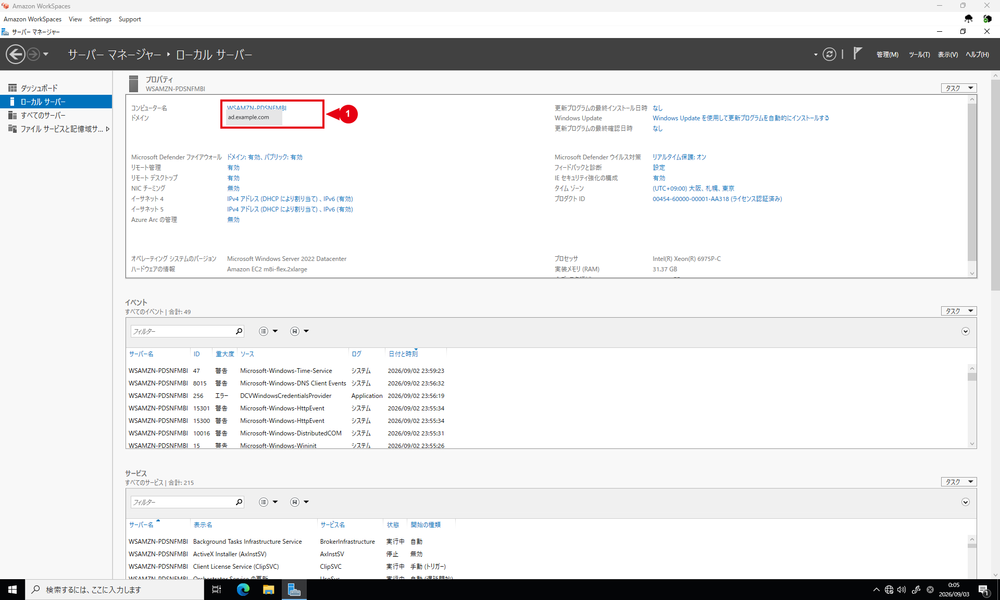
PowerShellで確認する場合は次を実行し、PartOfDomainがTrue、Domainが対象ドメインであることを確認する
Get-CimInstance Win32_ComputerSystem |
Select-Object Name, Domain, PartOfDomainターゲットOUを変更する前に、作成済みWorkSpaceの現在位置を確認する
Get-ADComputer -Identity '<WorkSpaceのコンピューター名>' -Properties DistinguishedName |
Format-List Name, DistinguishedName注意：ターゲットOU変更は既存WorkSpaceを移動しない
ターゲットOUの変更は、変更後に新規作成または再構築したWorkSpaceへ反映されます。既存WorkSpaceのコンピューターオブジェクトは自動移動されない
WorkSpaces OUの作成
OUを新規作成する
- 対象ドメインの管理資格情報でADUCを開く
ad.example.com、ad、Computersの順に展開ad\Computersを右クリックし、「新規作成」から「組織単位」を選択
図3では、①ad\Computers、②「新規作成」、③「組織単位」の順に選択する
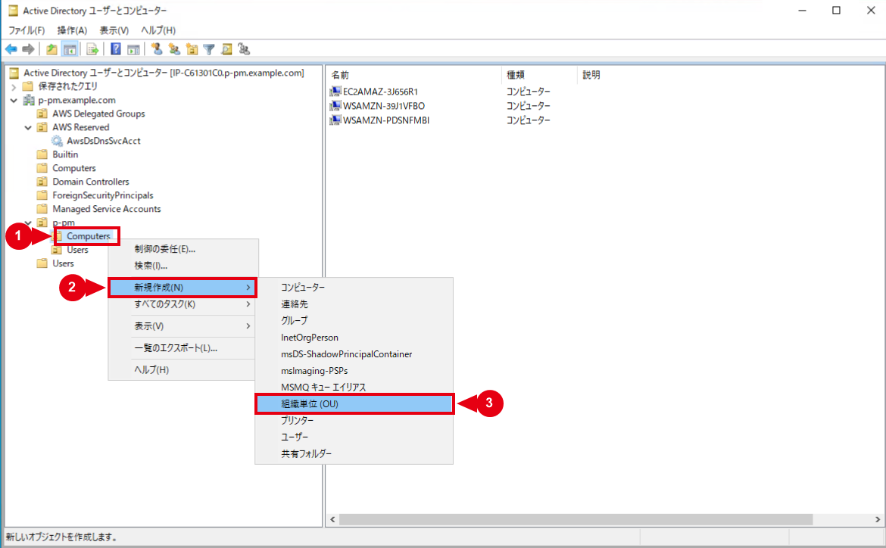
- 名前へ
WorkSpacesを入力 - 「コンテナーを誤って削除されないように保護する」を有効のままに
- 「OK」を選択
図4では、①作成先、②OU名、③誤削除防止、④「OK」を確認する

- 左ツリーと右ペインの両方で、
ad\Computers配下にWorkSpacesOUが表示されることを確認
図5では、①OUの配置先、②名前と種類を確認する
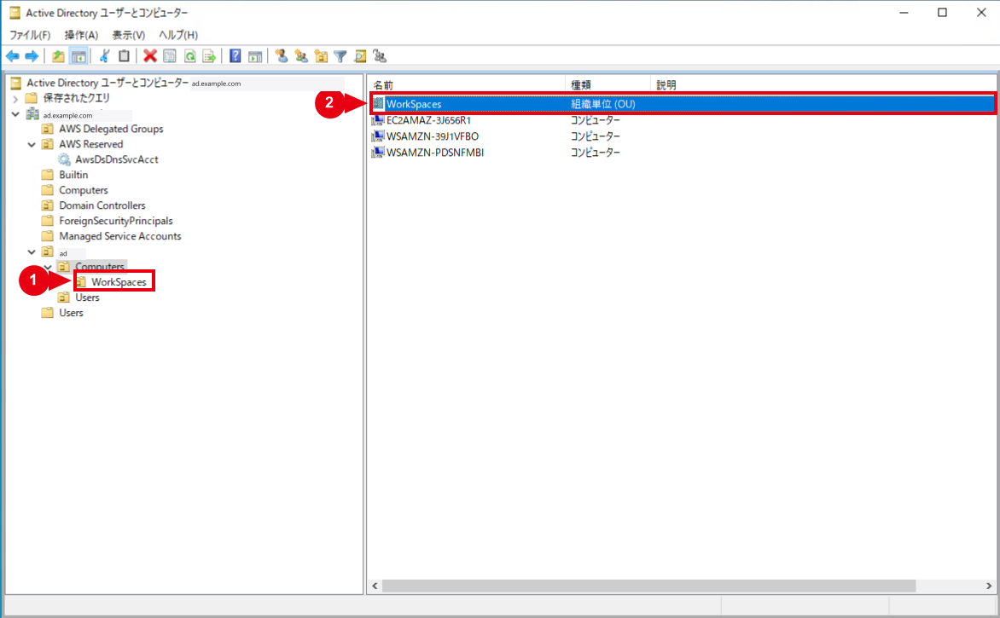
OUのDNを確認する
$workSpacesOuDn = 'OU=WorkSpaces,OU=Computers,OU=ad,DC=ad,DC=example,DC=com'
Get-ADOrganizationalUnit -Identity $workSpacesOuDn -Properties ProtectedFromAccidentalDeletion |
Select-Object Name, DistinguishedName, ProtectedFromAccidentalDeletionNameがWorkSpaces、DistinguishedNameが承認済みDN、ProtectedFromAccidentalDeletionがTrueであることを確認する
Connectorsへの権限委任
委任内容
| 項目 | 選択内容 |
|---|---|
| 委任先OU | ad\Computers\WorkSpaces |
| 委任対象 | Connectors |
| タスク | 委任するカスタムタスク |
| オブジェクト種類 | コンピューターオブジェクト |
| 作成・削除 | 選択したオブジェクトの作成、選択したオブジェクトの削除 |
| アクセス許可 | 読み取り、書き込み |
WorkSpaces専用OUにはユーザーを配置しないため、ユーザーオブジェクトの作成・削除・書き込み権限は追加しません。ユーザー検索に必要な既存の読み取り権限は維持し、WorkSpacesコンソールから対象ユーザーを検索できることを別途確認する
委任ウィザードを実行する
- ADUCで
ad\Computers\WorkSpacesを右クリックし、「制御の委任」を選択
図6では、①WorkSpaces OU、②「制御の委任」を選択する
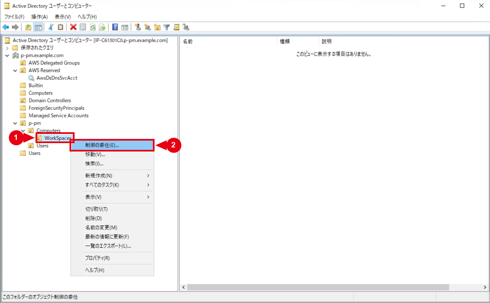
- ウィザードで「次へ」を選択し、「追加」から
Connectorsを指定 - 「名前の確認」で対象ドメインの
Connectorsへ解決されたことを確認し、「OK」、「次へ」の順に選択
図7では、①選択済みグループ、②「次へ」を確認する
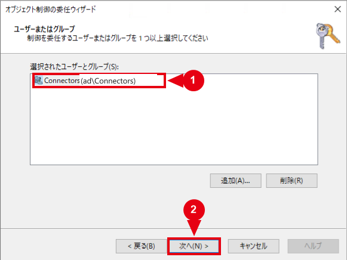
- 「委任するカスタムタスクを作成する」を選択して「次へ」を選択
図8では、①カスタムタスク、②「次へ」を選択する

- 「フォルダー内の次のオブジェクトのみ」を選択
- 「コンピューター オブジェクト」と、選択したオブジェクトの作成・削除を選択して「次へ」を選択
図9では、①対象範囲、②コンピューターオブジェクト、③作成・削除を確認し、④「次へ」を選択する
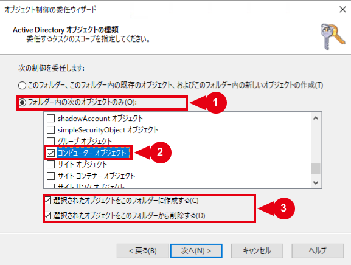
- 表示カテゴリで「全般」を選び、「読み取り」と「書き込み」を選択
- 「次へ」を選択し、完了画面で委任内容を確認して「完了」を選択
図10では、①「全般」、②「読み取り」と「書き込み」、③「次へ」を確認する
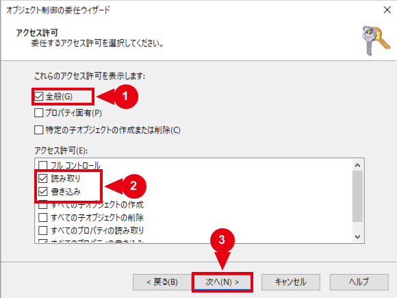
注意：作成・削除と読み取り・書き込みを組み合わせる
図9の作成・削除と、図10の読み取り・書き込みを組み合わせて委任します。上部の「プロパティ固有」は表示カテゴリであり、選択しただけでは権限は付与されない
詳細ACLを確認する
- ADUCの「表示」から「拡張機能」を有効に
WorkSpacesOUの「プロパティ」、「セキュリティ」、「詳細設定」の順に開くConnectorsのアクセス許可エントリを確認- OU自体にコンピューターオブジェクトの作成・削除、子コンピューターオブジェクトに読み取り・書き込みがあることを確認
- 適用先が
WorkSpacesOUまたは子コンピューターオブジェクトへ限定され、フルコントロールや親OU全体への権限がないことを確認
ADConnectorServiceを直接ACLへ追加せず、Connectorsグループ経由で委任する
WorkSpacesのターゲットOU設定
WorkSpaces Personalでは、登録済みディレクトリごとにコンピューターアカウントのターゲットOUを1つ指定する
- AWSマネジメントコンソールでAmazon WorkSpacesを開き、対象リージョンを確認
- 「ディレクトリ」から対象AD Connectorを選択
- Directory ID、ドメイン、VPCおよびサブネットを作業申請と照合
- 「ターゲットドメインと組織単位」で「編集」を選択
WorkSpacesを検索し、承認済みDNと一致するOUを選択- 候補に表示されない場合は、承認済みDNをカスタムOUとして入力
- 「保存」を選択
図11では、①WorkSpaces OU、②OU識別名、③「保存」を確認する
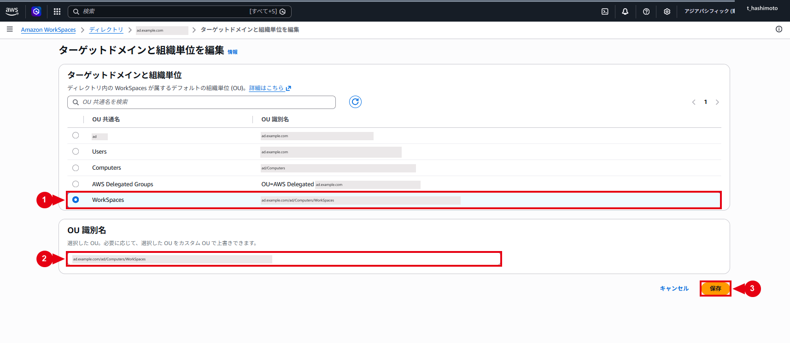
- 保存成功の通知と、保存後のOU共通名・OU識別名を確認
図12では、①更新成功、②保存済みのOU名とDNを確認する
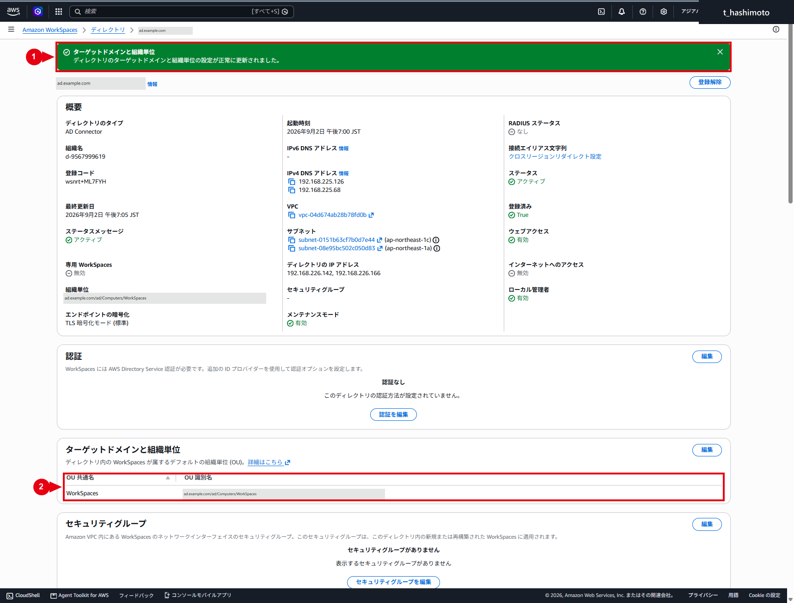
新規WorkSpaceによるOU所属確認
- Amazon WorkSpaces作成・バンドル設定手順に従い、未使用の検証用ドメインユーザーでWorkSpaceを1台新規作成
- 作成前にDirectory IDとターゲットOUを再確認
- WorkSpaceが
AVAILABLEになるまで待機 - ADUCで
ad\Computers\WorkSpacesを開き、新しいコンピューターオブジェクトを確認 - PowerShellでもDNを確認
$workSpacesOu = 'OU=WorkSpaces,OU=Computers,OU=ad,DC=ad,DC=example,DC=com'
Get-ADComputer -SearchBase $workSpacesOu -Filter * -Properties DistinguishedName,whenCreated |
Select-Object Name,DistinguishedName,whenCreated対象1台だけを確認する場合は次を実行する
Get-ADComputer -Identity '<WorkSpaceのコンピューター名>' -Properties DistinguishedName,whenCreated |
Format-List Name,DistinguishedName,whenCreatedDistinguishedNameが次の形式であることを確認する
CN=<コンピューター名>,OU=WorkSpaces,OU=Computers,OU=ad,DC=ad,DC=example,DC=comコンピューターオブジェクトを後から手動移動して成功扱いにしません。新規作成時点から指定OUへ配置されたことを確認する
切り戻し
ターゲットOUを誤って設定した場合は、新規WorkSpaceの作成を停止し、WorkSpacesディレクトリのターゲットOUを変更前のDNへ戻します。誤ったOUにあるコンピューターオブジェクトは、対応するWorkSpaceを特定してから処置する
既存WorkSpaceの再構築は単なる再起動ではありません。ルートボリュームがバンドルの最新イメージから再作成され、ユーザーボリュームも最新スナップショットから再作成されます。OU反映だけを目的に安易に実行せず、バックアップ、スナップショット時刻、KMSキー、利用者影響および承認を確認した別作業として実施する
Amazon WorkSpaces用GPO作成・適用・運用手順
目次
概要
本手順書で実施すること
DCV（旧WSP）の管理テンプレートwsp.admx／wsp.admlをドメインの中央ストアへ配置し、お客様作成GPOをad\Computers\WorkSpaces OUへ直接リンクします。Amazon WorkSpaces DCV Policyでは、Configure clipboard redirectionを「有効／Copy and Paste」に設定する
併せて、検証用GPOWorkSpaces-Computer-Policyを使用し、GPO本体の作成、OUへのリンク、適用順序の変更、リンク解除とGPO本体削除の違いを確認する。最後に代表WorkSpaceでgpupdateとgpresultを実行する
完了条件
- ✔ 中央ストアへ対象版の
wsp.admxとwsp.admlを配置している - ✔
Amazon WorkSpaces DCV Policyがad\Computers\WorkSpacesへ直接リンクされている - ✔ リンクが有効、強制なし、
Authenticated Users、WMIフィルターなしである - ✔ 親OU
adに同GPOの直接リンクが残っていない - ✔
Configure clipboard redirectionが「有効／Copy and Paste」である - ✔
gpresultで対象WorkSpaceへのGPO適用を確認している - ✔ 検証用GPOだけを削除し、継続利用するGPOを残している
今回の設定値
| 項目 | 今回の設定値 |
|---|---|
| ドメイン | ad.example.com |
| WorkSpaces OU | ad\Computers\WorkSpaces |
| DCV用GPO | Amazon WorkSpaces DCV Policy |
| GPOの直接リンク先 | ad\Computers\WorkSpaces |
| セキュリティフィルター | Authenticated Users |
| WMIフィルター | なし |
| 強制 | なし |
| DCV設定 | Configure clipboard redirection＝有効／Copy and Paste |
| 操作確認用GPO | WorkSpaces-Computer-Policy（確認後に削除） |
GPOの設計
- WorkSpaces固有設定を
Default Domain Policyへ追加しない - お客様管理OU
ad配下に、お客様作成GPOをリンクする - GPO本体の既存設定とリンク範囲を確認した後に対象OUへ直接リンクする
- 適用だけを止める場合は、GPO本体を残してリンクを無効化または削除する
- GPO本体を削除する場合は、お客様作成GPOだけを対象にし、バックアップと全リンク先を確認する
- AWSが作成・管理するGPOを変更、削除またはリンク解除しない
| GPO | 用途 | 最終状態 |
|---|---|---|
Amazon WorkSpaces DCV Policy |
お客様が作成・管理するDCV固有設定 | WorkSpaces OUへ直接リンクして継続利用 |
WorkSpaces-Computer-Policy |
GPO管理操作の確認 | リンク・順序変更・削除を確認後に削除 |
WorkSpaces-User-Policy |
利用者向け設定 | ユーザーOUまたはループバック設計後に別途作成 |
Windows WorkSpacesの管理テンプレート、適用できる設定および注意事項は出典：AWS公式：WorkSpaces PersonalでWindows WorkSpacesを管理する
Amazon WorkSpaces DCV PolicyはAWS Managed Microsoft ADの作成時に自動作成されるGPOではありません。本手順でお客様が作成し、管理するGPOです。既に存在する場合は新規作成せず、GPO名、設定、所有者、全リンク先および変更申請を照合してから使用する
前提条件
- ✔ Amazon WorkSpaces用OU作成・権限委任・ターゲットOU設定手順を完了している
- ✔
ad\Computers\WorkSpacesOUと対象WorkSpaceが存在する - ✔ ドメイン参加済み管理端末でGPMCを使用できる
- ✔ パイロットWorkSpaceの
C:\Program Files\Amazon\WSPから、対象版のwsp.admxとwsp.admlを取得している - ✔ 変更前のリンク、設定、セキュリティフィルター、WMIフィルターおよび適用順序を確認している
- ✔
Amazon WorkSpaces DCV Policyが既存か未作成かを確認し、既存の場合はお客様管理GPOであることを確認している - ✔ 有効化する設定値がセキュリティ・運用・利用部門で承認されている
DCV管理テンプレートの中央ストア配置
中央ストアは次のパス
\\ad.example.com\SYSVOL\ad.example.com\Policies\PolicyDefinitions既にPolicyDefinitionsがある場合は、フォルダー全体を作り直したり、ローカルのフォルダー一式で上書きしたりしません。対象ファイルだけを版管理して追加する
図1では、①Policies配下のPolicyDefinitionsを確認する
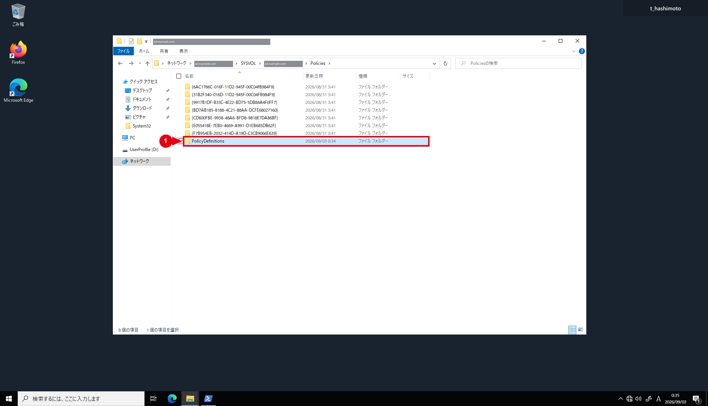
パイロットWorkSpaceからwsp.admxを次へコピーする
コピー元：C:\Program Files\Amazon\WSP\wsp.admx
コピー先：\\ad.example.com\SYSVOL\ad.example.com\Policies\PolicyDefinitions\wsp.admx図2では、①コピー元、②コピー先を確認する
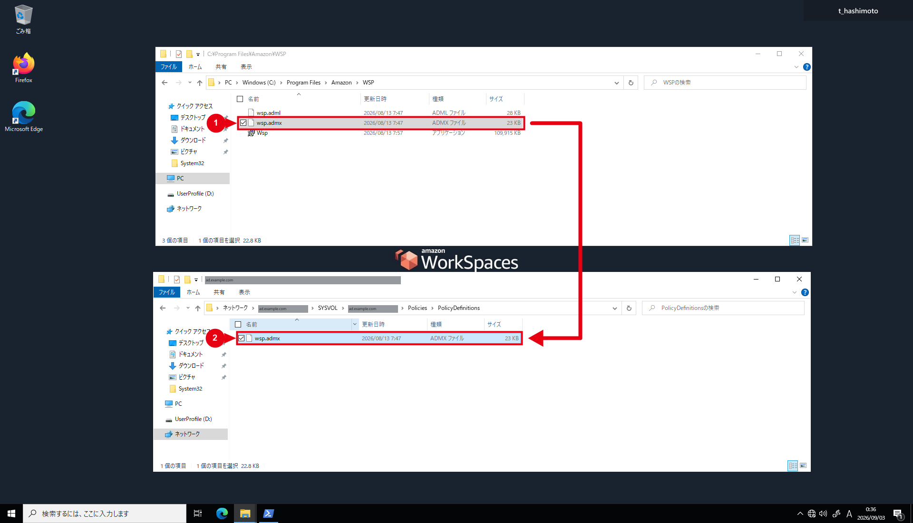
PolicyDefinitions配下に言語フォルダーen-USがあることを確認する
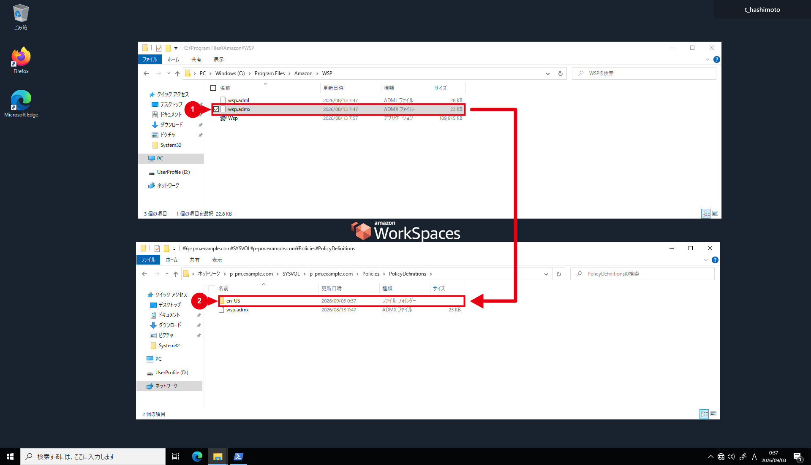
wsp.admlを次へコピーする
コピー元：C:\Program Files\Amazon\WSP\wsp.adml
コピー先：\\ad.example.com\SYSVOL\ad.example.com\Policies\PolicyDefinitions\en-US\wsp.adml図4では、①コピー元、②PolicyDefinitions\en-USへの配置を確認する
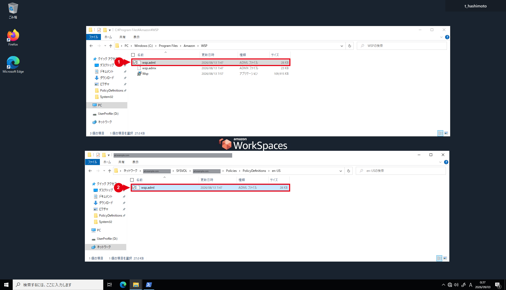
注意：中央ストア全体を置換しない
中央ストアは同一ドメインのGPMC利用者が共有します。既存ファイルを削除せず、追加するファイルの取得元、更新日時およびバージョンを確認する
DCV用GPO本体を準備する
- GPMCで対象ドメインの「グループポリシーオブジェクト」を開き、
Amazon WorkSpaces DCV Policyの有無を確認 - 既に存在する場合は、GPOの「スコープ」と「設定」を開き、全リンク先、セキュリティフィルター、WMIフィルターおよび既存設定を確認する。別用途の同名GPOやAWS管理GPOとして扱われている場合は操作を中止
- 存在しない場合は「グループポリシーオブジェクト」を右クリックし、「新規」を選択
- 名前へ
Amazon WorkSpaces DCV Policyを入力し、「ソース スターターGPO」は「なし」のまま作成 - 作成直後はリンク先がなく、設定が未構成であることを確認する。後続の「DCV用GPOのリンク範囲変更」でWorkSpaces OUだけへリンクし、「DCV設定の反映」で設定
注意：既存の同名GPOを上書きしない
同名GPOが存在する場合は、そのGPOを本手順で新規作成しません。既存のリンク先や設定が本書と異なる場合は、影響範囲を確認して変更内容を再承認する
検証用GPO本体の作成
WorkSpaces-Computer-Policyは、GPO本体の作成、リンク、リンク順序変更、リンク解除および削除という管理操作を確認するための一時GPOです。設定値は追加しないため、ポリシーの機能適用を検証するGPOではありません。承認済みの作業時間内だけ使用し、本書の削除手順まで同じ作業で完了する
gpmc.mscを起動- 対象ドメインの「グループポリシーオブジェクト」を右クリックし、「新規」を選択
図5では、①「グループポリシーオブジェクト」、②「新規」を選択する
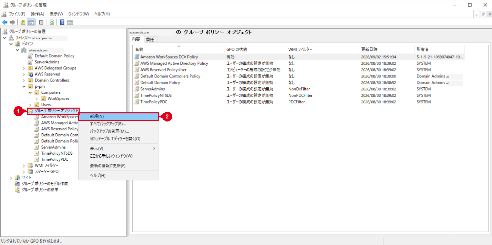
- GPO名へ
WorkSpaces-Computer-Policyを入力 - 「ソース スターターGPO」は「なし」のまま「OK」を選択
図6では、①GPO名、②「OK」を確認する

- GPO本体が作成され、「スコープ」のリンク一覧が空であることを確認
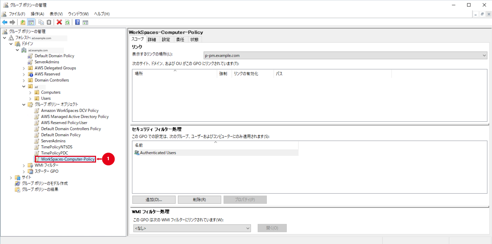
本体作成時は「このドメインにGPOを作成し、このコンテナーにリンクする」を使用しません。GPOの作成とOUへのリンクを分け、後続手順でリンク先を明示的に選択する
DCV管理テンプレートの表示確認
Amazon WorkSpaces DCV Policyを編集し、次を展開する
コンピューターの構成
└─ ポリシー
└─ 管理用テンプレート
└─ Amazon
└─ WSPAWS資料ではDCV、GPMCのテンプレート名ではWSPと表示される場合があります。図8では、①Amazon > WSP、②設定一覧を確認する
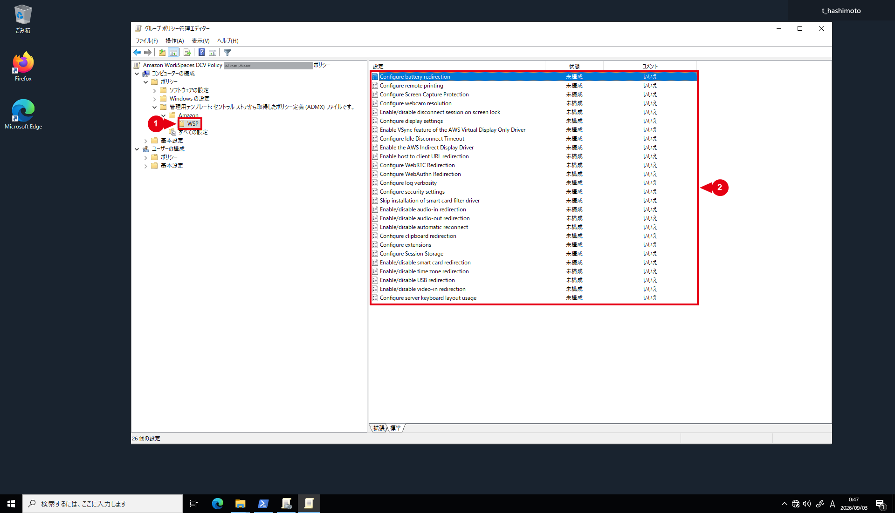
図8の全項目が「未構成」である場合、この画面で確認できるのはテンプレートの読み込みまでです。設定値の反映は後続の図17～19で確認する
DCV用GPOのリンク範囲変更
最初にWorkSpaces OUへ対象GPOを直接リンクし、リンクが有効であることを確認する。親OUad側に同じGPOのリンクが存在する場合だけ、他の子OUへの影響を確認したうえで親OU側のリンクを削除する
WorkSpaces OUへ直接リンクする
- GPMCで
ad\Computers\WorkSpacesを右クリック - 「既存のGPOのリンク」を選択
図9では、①WorkSpaces OU、②「既存のGPOのリンク」を選択する
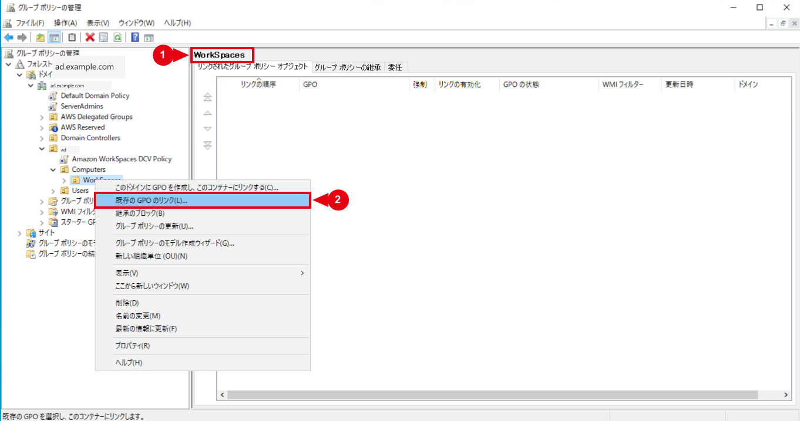
Amazon WorkSpaces DCV Policyを選択して「OK」を選択
図10では、①対象ドメイン、②GPO、③「OK」を確認する
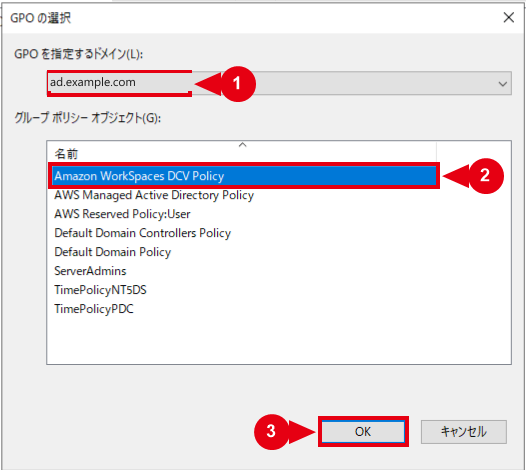
- WorkSpaces OUのリンク一覧で、「リンクの有効化」が「はい」、「強制」が「いいえ」、WMIフィルターが「なし」であることを確認
- セキュリティフィルターは
Authenticated Usersと
親OUのリンクだけを削除する
- WorkSpaces OU側の直接リンクが有効であることを確認
- 親OU
adに同じGPOの直接リンクがあるかを確認する。リンクがない場合は削除操作を行わず、「GPO本体のスコープを確認する」へ進む - 親OUにリンクがある場合は、
ad配下の子OUとコンピューターを確認し、WorkSpaces OU以外でこのGPOを継承している対象がないこと、または継承を止めても影響がないことを確認する。ほかの子OUや端末がこのGPOを必要としている場合は、親OUのリンクを削除せず、対象別のリンク設計を再検討 - 影響がないことを確認できた場合だけ、親OU
ad直下に表示されるAmazon WorkSpaces DCV Policyのリンクを右クリックし、「削除」を選択
図11では、①親OU側のGPOリンク、②「削除」を選択する
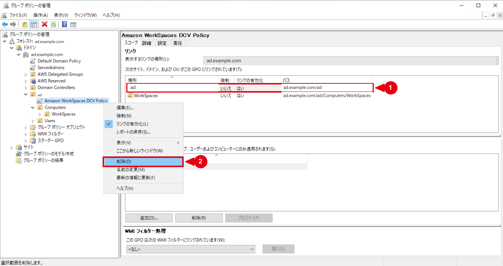
- 確認メッセージに「この操作ではGPO自体は削除されません」と表示されていることを確認して「OK」を選択
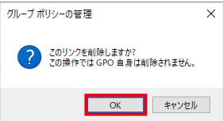
- GPO本体が残り、WorkSpaces OUに同GPOの直接リンクが1件あることを確認
図13では、①WorkSpaces OU、②直接リンクと有効状態を確認する
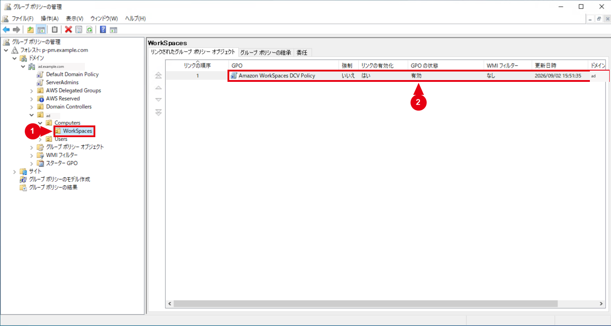
「リンクの有効化」がチェック済みの場合は押し直しません。押すとリンクが無効になります。リンクの削除とGPO本体の削除は別の操作
GPO本体のスコープを確認する
- 「グループポリシーオブジェクト」配下の
Amazon WorkSpaces DCV Policyを選択 - 「スコープ」を開き、リンク先が次の1件だけであることを確認
ad.example.com/ad/Computers/WorkSpaces- 強制なし、リンク有効、
Authenticated Users、WMIフィルターなしを確認
図14では、①GPO本体、②リンク先、③セキュリティフィルター、④WMIフィルターを確認する

詳細レポートでも、①GPO本体、②リンク先、③セキュリティフィルターを照合できる
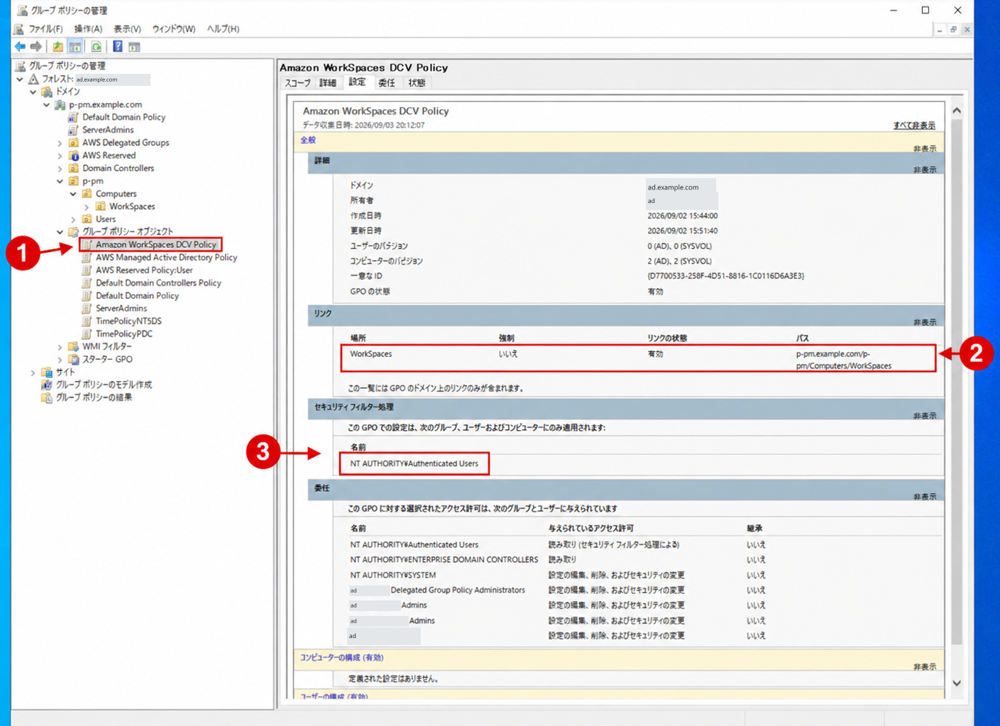
ドメインルートの一覧は、WorkSpaces OUへ直接リンクしたGPOの一覧ではありません。参考図2では、①ドメインルート、②ルートへ直接リンクされたGPO、③リンク順序を確認する
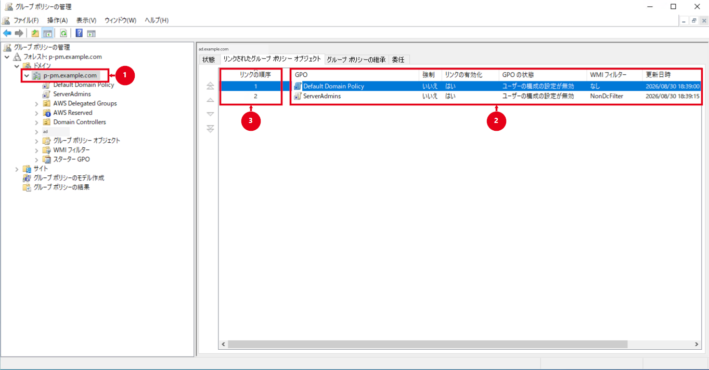
Default Domain PolicyへAmazon\WSP設定を追加していないことも確認する
検証用GPOのリンク
WorkSpacesOUを右クリックし、「既存のGPOのリンク」を選択
図15では、①WorkSpaces OU、②リンク操作を確認する
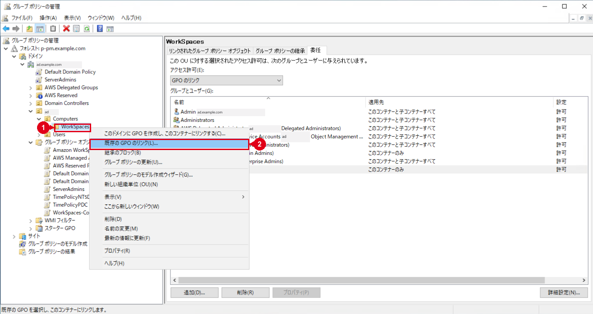
WorkSpaces-Computer-Policyを選択して「OK」を選択
図16では、①検証用GPO、②「OK」を確認する
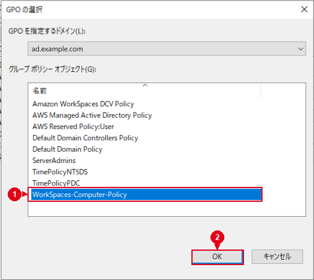
DCV設定の反映
Amazon WorkSpaces DCV Policyを編集し、Computer Configuration\Policies\Administrative Templates\Amazon\WSPのConfigure clipboard redirectionを開く
- 「有効」を選択
- オプションを
Copy and Pasteに - 「適用」、「OK」の順に選択
図17では、①「有効」、②Copy and Paste、③「適用」、④「OK」を確認する

設定一覧で、Configure clipboard redirectionだけが「有効」であることを確認する
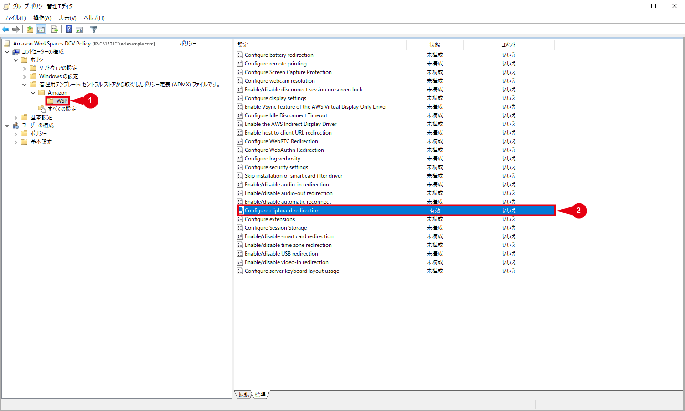
GPO本体の「設定」で、Configure clipboard redirectionが「有効」、Clipboard redirection optionがCopy and Pasteであることを確認する
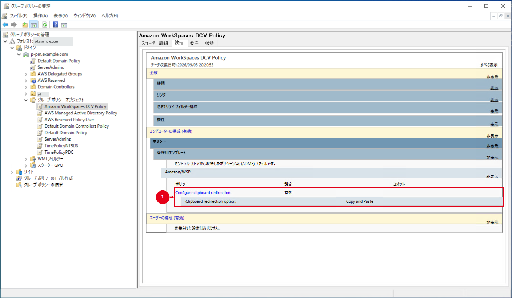
Copy and PasteはWindows WorkSpacesの既定動作と同じため、コピー操作の成功だけではGPO適用を証明できません。GPMCの設定値とgpresultの適用GPO名を確認する
GPOの適用順序変更
同じOUに複数GPOをリンクした場合は、競合する設定がないことを確認してから順序を変更する
WorkSpacesOUのリンク一覧で、Amazon WorkSpaces DCV Policyが順序1、WorkSpaces-Computer-Policyが順序2であることを確認
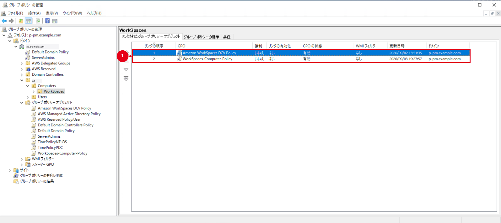
WorkSpaces-Computer-Policyを選択し、「リンクを上に移動」を選択
図21では、①検証用GPO、②「リンクを上に移動」を確認する
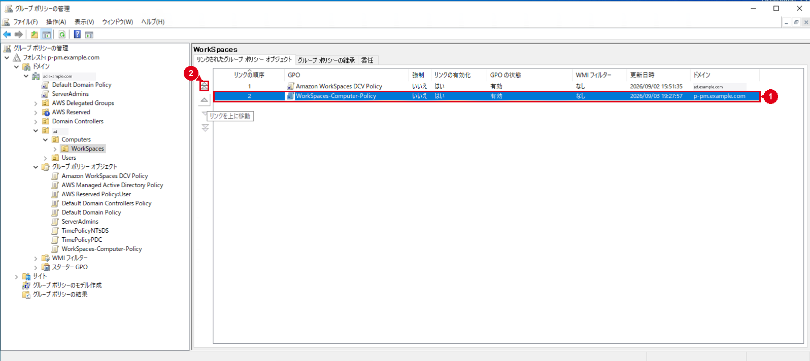
WorkSpaces-Computer-Policyが順序1、Amazon WorkSpaces DCV Policyが順序2になったことを確認
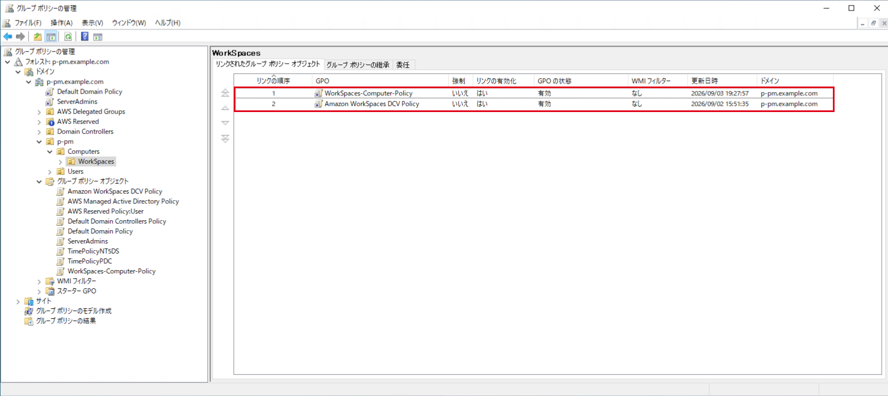
同じコンテナーにリンクされたGPOは、リンク順序1が最も高い優先度です。ただし、実効値はサイト、ドメイン、OU、継承、強制、セキュリティフィルターおよびWMIフィルターの影響を受けるため、代表端末のgpresultで確認する
検証用GPOの削除
本節で削除するのはWorkSpaces-Computer-Policyだけです。AWSが作成・管理するGPOと、継続利用するAmazon WorkSpaces DCV Policyは削除しない
WorkSpaces-Computer-Policyの全リンク先とセキュリティフィルターを確認- 必要な保持期間に従ってGPOをバックアップ
- GPO本体を右クリックして「削除」を選択
図23では、①削除対象、②「削除」を確認する

- 確認メッセージに、GPO本体とドメイン内のリンクが削除される旨が表示されていることを確認し、「はい」を選択
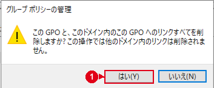
- 「グループポリシーオブジェクト」一覧から検証用GPOが消えたことを確認

- WorkSpaces OUのリンク一覧に
Amazon WorkSpaces DCV Policyだけが残っていることを確認

特定OUへの適用だけを止める場合は、GPO本体を削除せずリンクを削除します。GPO本体を誤って削除した場合は追加変更を停止し、バックアップから復元して必要なOUへ再リンクする
GPO適用結果の確認
代表WorkSpaceで管理者PowerShellまたはコマンドプロンプトを開く
gpupdate /force
gpresult /scope computer /rgpupdateでコンピューターとユーザーポリシーの更新成功を確認する。図27では、コンピューターのOUがad\Computers\WorkSpacesで、適用GPOにAmazon WorkSpaces DCV Policyがあり、削除したWorkSpaces-Computer-Policyがないことを確認する
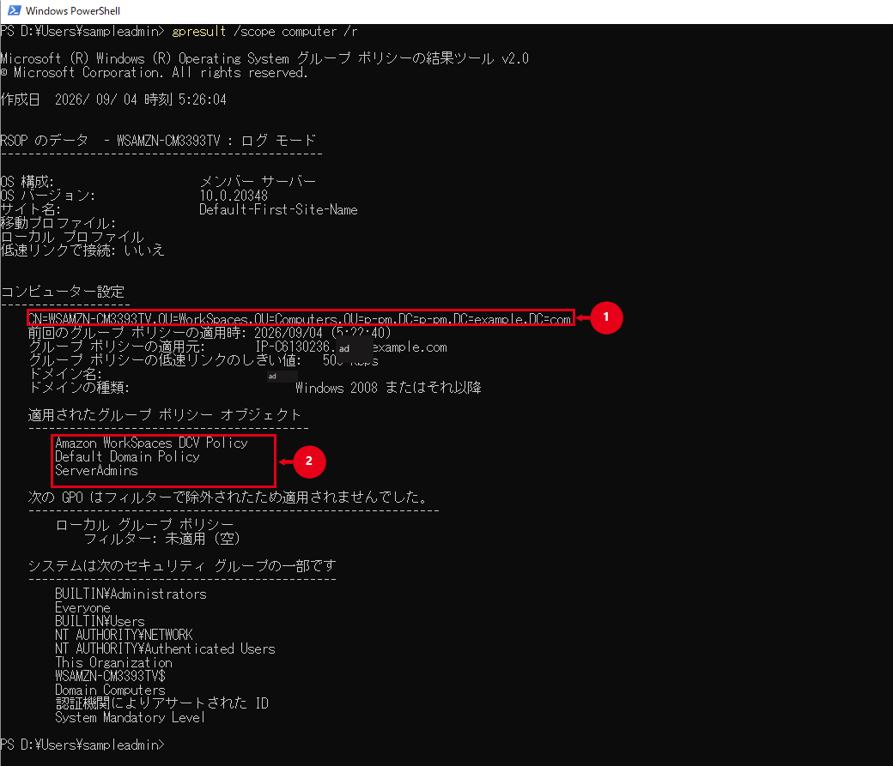
適用されない場合は、gpresultの拒否理由とイベントビューアーのMicrosoft\Windows\GroupPolicy\Operationalを確認する。Active DirectoryとSYSVOLのレプリケーション待ち、セキュリティフィルター、WMIフィルター、空のGPOおよびアクセス拒否を切り分ける
多数のWorkSpacesは、通常のグループポリシー更新で順次反映されます。gpupdate /forceは代表端末での即時確認や障害調査に使用し、全台へ手動で繰り返し実行しない
ユーザーGPOとパスワードポリシー
コンピューター設定はWorkSpaceのコンピューターオブジェクトが所属するad\Computers\WorkSpacesへリンクします。ユーザー設定は利用者のユーザーオブジェクトが所属するOUへリンクします。WorkSpaces利用者だけに限定する場合は、専用ユーザーOU、セキュリティフィルター、または設計済みのループバック処理を使用する
WorkSpacesコンピューターOUへリンクするGPOは、ドメインユーザーのパスワード有効期限を変更するためのGPOではありません。ドメインの既定パスワードポリシーと、対象ユーザーへ割り当てたきめ細かなパスワードポリシーを別に管理する
切り戻し
設定値だけを戻す場合は、対象設定を「未構成」へ戻し、GPMCの「設定」、gpupdateおよびgpresultで反映を確認する。適用だけを止める場合は、WorkSpaces OUのリンクを無効化または削除し、GPO本体を保持する